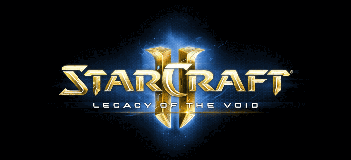

Introduction
Tools and Programs needed
How to install the necessary tools and programs
Prepairing the model for 3DS max via Brawlbox
Importing to 3DSmax and preparing the model for Starcraft 2
Using your Model in a Starcraft 2 map/mod
Common errors and how to fix them